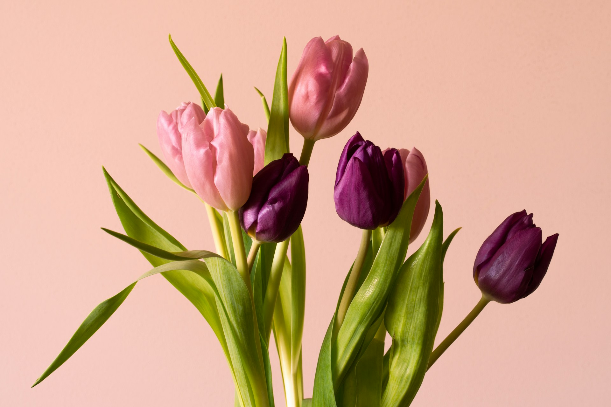
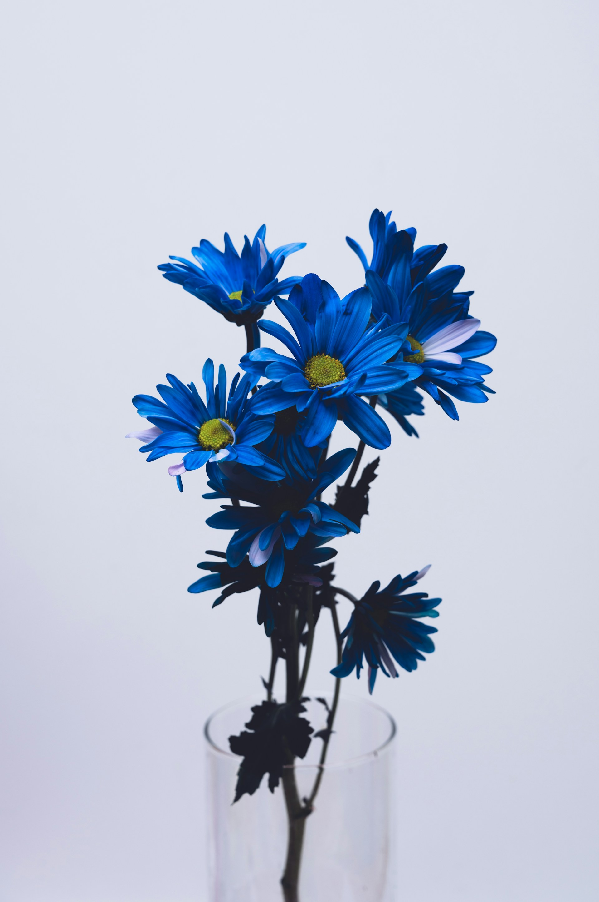
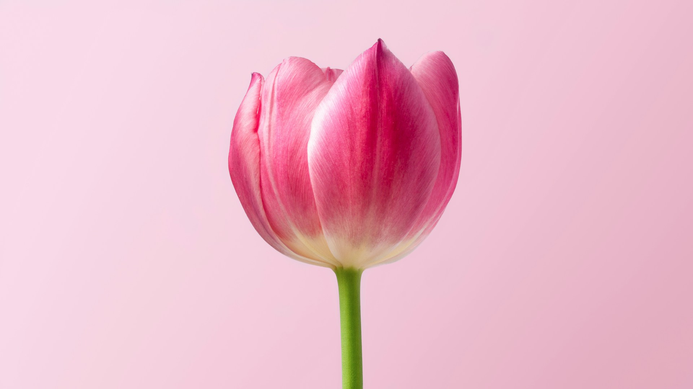
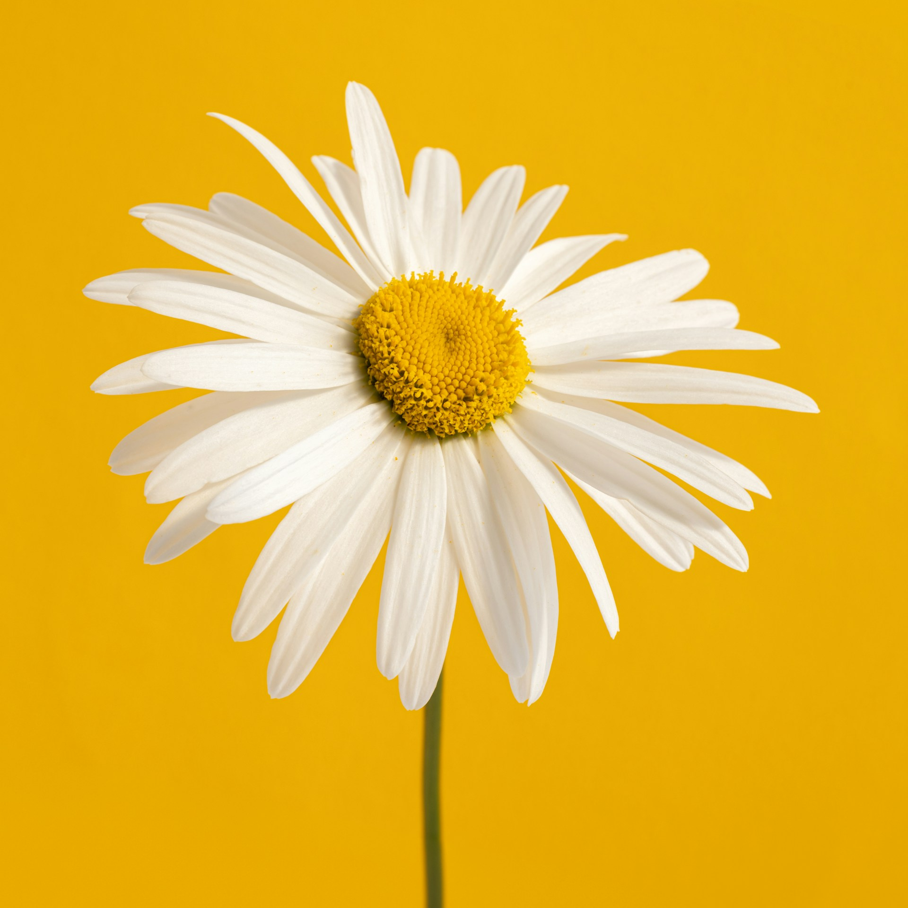
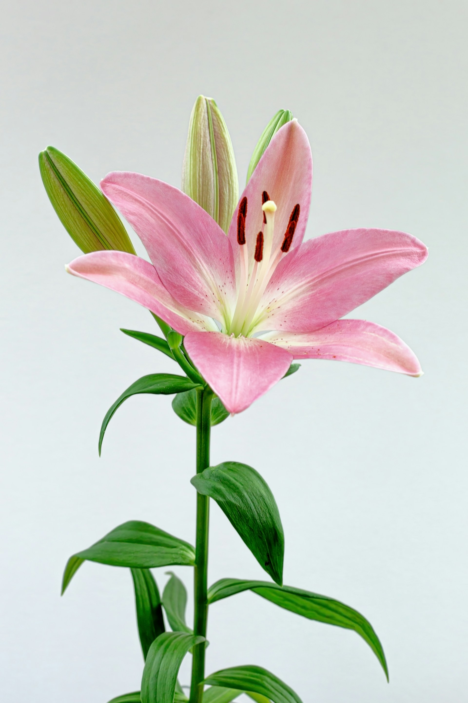

Lirios Elegantes
Los lirios sorprenden con sus pétalos amplios y delicados. Su apariencia sofisticada aporta belleza al paisaje, mientras sus colores suaves evocan tranquilidad, frescura y encanto durante primavera.

Los lirios sorprenden con sus pétalos amplios y delicados. Su apariencia sofisticada aporta belleza al paisaje, mientras sus colores suaves evocan tranquilidad, frescura y encanto durante primavera.

Las flores azules aportan personalidad y contraste al jardín primaveral. Su tonalidad profunda crea composiciones llamativas, frescas y originales, perfectas para espacios llenos de vida y color.

Los tulipanes destacan por sus colores intensos y formas elegantes. Son flores delicadas que transmiten frescura, alegría y renovación, ideales para celebrar la llegada primaveral con un toque natural encantador.

Las margaritas representan sencillez y luminosidad con sus pétalos blancos y centros amarillos. Son flores alegres que aportan un aspecto natural, fresco y acogedor a cualquier espacio.

La primavera transforma los jardines con flores de distintas formas, tamaños y colores. Tulipanes, lirios, margaritas y flores azules crean paisajes llenos de frescura, armonía y belleza.
